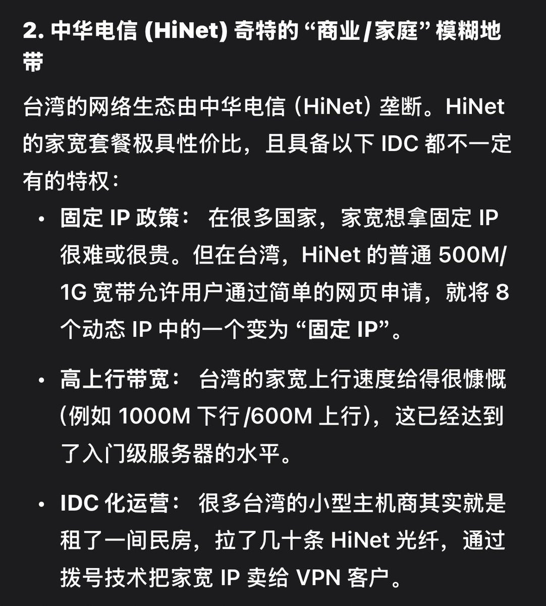

山田リョウ⛩️
@Yamada_Ryoooo
@PrinzEugenOwO 真引用了曝光他又不敢回了🤣

山田リョウ⛩️
@Yamada_Ryoooo
为什么链条是base in taiwan？
彻底破解：因为台湾少有专门的机房ip，所以台湾的梯子节点大多数是家宽，所以被马斯克认为是真台湾人了
其他base in taiwan但是是China web/android app/App Store的都是同理🤡 https://t.co/BbgiUuetNX https://t.co/eu7WPdenlm
幼月
@PrinzEugenOwO
你機票是訂了沒？都要1月底了欸南京倪茂森 https://t.co/E3WY2y6W6n https://t.co/0I9eTYLetS